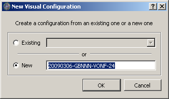
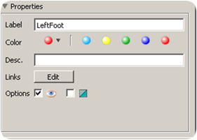
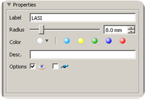
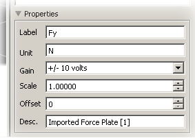
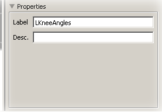
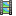
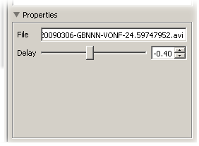

Acquisition explorer
This pane contains functions to enhance the visualization and edition of the data. Markers in the 3D pane can be displayed with different colors and sizes. The trajectory of markers can be displayed. The options of this pane permit to save the configuration of visualization of the markers in the 3D pane. This panel permits also to change the label of the markers, the properties of the analog channels and the label of model outputs, as well as other properties.
The file formats supported by Mokka to configure a model are the following:
- MVC: Mokka Visualization Configuration files.
- VSK/VST: Vicon Skeleton (Template) files.
Configuration menu
The button returns a menu with the following actions for the visual configuration:
-
- New configuration: Create a new configuration or replace an existing one
- Load configuration: Open a configuration that will be added to the list
- Save configuration: Save the active configuration
- Remove configuration: Delete the active configuration from the list of known visual configuration
- Deselect configuration: Discard the active configuration. This configuration will be kept on the configuration list
- Clear configurations: Remove all the configurations from the list
-
Dialog box opened when clicking on New configuration
Ressources' list
Segments
-
The segments' list in the acquisition explorer contains the option to visualize segments
 in 3D views. This item is only visible if at least one segment is defined. The options to change the properties (located at the bottom of the panel) of the segments or to edit the links of the segments appears when one segment or a group of segments are selected.
in 3D views. This item is only visible if at least one segment is defined. The options to change the properties (located at the bottom of the panel) of the segments or to edit the links of the segments appears when one segment or a group of segments are selected.
To assign a color to the selected segments, you can click on the first circle which will open a dialog box where you will pick the desired color. This color is then saved in the color history (other circles). To reuse the color in the history, click only on it and the selected markers will be repainted.
There are also options in the contextual menu for the segment (right click onto the segment item):- New Segment: To create a new segment, you have to select markers of segments in the acquisition explorer or in the 3D view. In the new opened window, you can define the label of the segment, a description of the segment and links between markers that will be displayed in the 3D view. Once the segment is created, you will see it in the Segments section. This operation can be done from the contextual menu of the 3D Viewer
- Hide selected segments: Hide the selected segments in the 3D Viewer
- Unhide selected segments: Unhide the selected segments in the 3D Viewer
-
Properties associated with segments
Markers
-
The markers' list in the acquisition explorer contains the options to visualize and track markers in the 3D Viewer . Moreover, when a marker or a group of markers are selected, it’s possible to change their properties (Label, Radius, Color and Description)
To assign a color to the selected markers, you can click on the first circle which will open a dialog box where you will pick the desired color. This color is then saved in the color history (other circles). To reuse the color in the history, click only on it and the selected markers will be repainted. The options to change the properties of the markers appear at the bottom of the panel when one marker or a group of markers are selected.
The marker items are also used by the charts. Drag the selected markers into the Point chart to plot them.
There are also options in the contextual menu for the markers (right click onto the marker item):- Select all markers: Select all the markers in the 3D view and in the acquisition explorer. It’s also possible to do this operation in the 3D Viewer
- Hide selected markers: Hide the selected markers in the 3D view. It’s also possible to do this operation in the 3D Viewer
- Unhide selected markers: Unhide the selected markers in the 3D view. It’s also possible to do this operation in the 3D Viewer
-
Properties associated with markers
Virtual markers
-
As for markers, the virtual markers' list
 in the acquisition explorer contains the options to visualize and track markers in the 3D Viewer . By default, virtual markers are hidden.
in the acquisition explorer contains the options to visualize and track markers in the 3D Viewer . By default, virtual markers are hidden.
To view or track permanently one or numerous virtual markers, the and/or box must be checked into the properties menu.
Analogs
-
The analog channels
 are 1D temporal signal acquired synchronously with the video data.
By using the properties panel you can check or modify the information related to the selected analog channels.
are 1D temporal signal acquired synchronously with the video data.
By using the properties panel you can check or modify the information related to the selected analog channels.
Warning: Modifying the analog offset, scale and gain could modify values when saving the acquisition and reading it again. Moreover, removing an analog channel can corrupt the acquisition. For example, if it used to register force platform data and you remove it, Mokka won't be able to compute these force platform data the next time.
The analog items are also used by the charts. Drag the selected analog channels into Analog chart to plot them.
There are also options in the contextual menu for the analog channels (right click onto the analog item):- Select all analog channels: Select all analog channels in the acquisition explorer. It’s possible to modify the properties of analog channels all together
-
Properties associated with analog channels
Force platform reactions
-
The component of each force platform can be plotted in chart. Drag the selected component into Point chart to plot it.
Some of the components can be detailed as following:- Force: also visible as force vector in the 3D view ;
- Position: also visible in the 3D view as force path (click on the checkbox to enable it) ;
- Direction angle: each component is defined as the angle between the force vector and the horizontal of the selected plane.
- Component X: projected in the yOz plane (as visible in the 3D right orthogonal view) ;
- Component Y: projected in the xOz plane (as visible in the 3D front orthogonal view) ;
- Component Z: projected in the yOz plane (as visible in the 3D top orthogonal view)
Model outputs
-
The model output
 contains data computed (for example with the PluginGait Model). There are 5 sub-sections: Angles, Forces, Moments, Powers and Scalar. If the subsection is empty, it is not displayed.
contains data computed (for example with the PluginGait Model). There are 5 sub-sections: Angles, Forces, Moments, Powers and Scalar. If the subsection is empty, it is not displayed.
These items are also used by the charts. Drag the selected output into Point chart to plot them.
There are also options in the contextual menu for the model outputs (right click onto the output item):- Select all model outputs: Select all Model outputs in the acquisition explorer. It’s possible to modify the properties all together
- Select all angles: Select all angles from Model outputs in the acquisition explorer. It’s possible to modify the properties all together
- Select all forces: Select all forces from Model outputs in the acquisition explorer. It’s possible to modify the properties all together
- Select all moments: Select all moments from Model outputs in the acquisition explorer. It’s possible to modify the properties all together
- Select all powers: Select all powers from Model outputs in the acquisition explorer. It’s possible to modify the properties all together
- Select all scalars: Select all scalars from Model outputs in the acquisition explorer. It’s possible to modify the properties all together
-
Properties associated with model outputs
Videos
-
The video items  corresponds to extra files appended automatically when loading C3D files (if requested metadata are available) or manually using the menu File > Import > Video files for any other file format.
These items are used by the video view. Drag the selected video inside to display it. The video is played frame by frame by taking into account the difference between the acquisition's frequency and the video's frequency.
The properties of video give you access to the filename of the video and most important, to a possible delay between the video and the acquisition. This property is very useful if you have unsynchronized recorded videos. Having a negative delay means that the video started to be recorded before the beginning of the acquisition. The range of the delay is limited to -5.0 seconds to 5.0 seconds.
Note: If a video file is not found when the acquisition is loaded, then a video icon with a warning is shown . Moreover, the text is in red to show that an error happend. To have more details on the error, you could check in the logger .
. Moreover, the text is in red to show that an error happend. To have more details on the error, you could check in the logger .
-
Properties associated with videos